02 / Environment
Water Balloon Fight
A water balloon fight across a backyard pool with a boy NPC that matches the player's throwing skill, so play passes through winning, losing and fair phases.
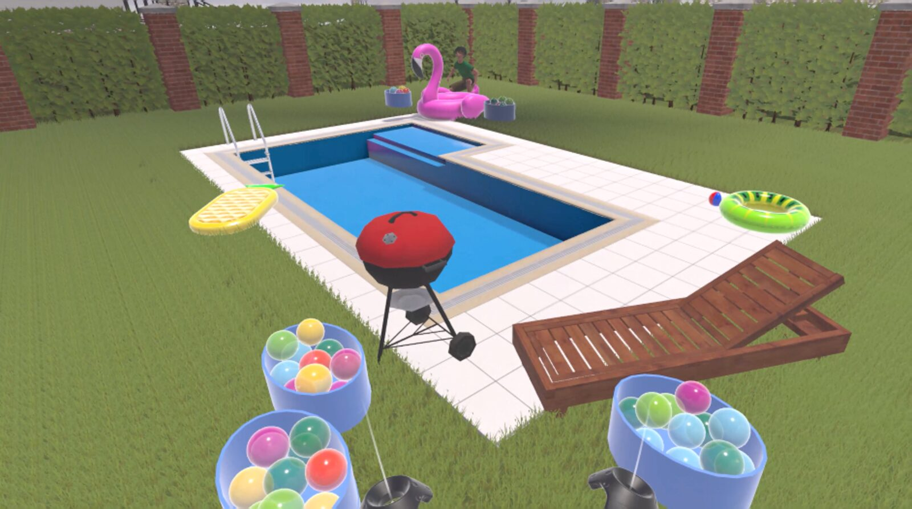
Start with the interaction
The participant stands at one end of a backyard pool on a bright summer day, with a bucket of water balloons beside them. Diagonally across the pool is a young boy with a bucket of his own. For seven and a half minutes they throw balloons at each other, ducking behind cover and popping out to throw, while the NPC quietly adjusts how well it plays so that the participant spends time winning, time losing, and time in an even fight.
The environment is an application of an affective VE design framework adapted for Panksepp's primary emotion systems. Existing frameworks for designing emotional virtual environments work from the dimensional model of emotion, which describes a feeling only by its valence, arousal and dominance. A Pankseppian system such as PLAY needs more than that: it has innate triggers that must be present, suppressors that must be designed out, and a categorical character (for PLAY, social and reciprocal) that a coordinate cannot capture. The adapted framework adds those steps, and the Water Balloon environment is its first test.
The outcome: the environment reliably produced joy, high pleasantness, a rise in felt playfulness and a sense that the NPC was a social being, and participants felt strongly present in it. It did not produce high arousal, high dominance or statistically detectable reciprocal throwing, so against the pre-specified criterion PLAY was not elicited in full. The full account is in the final paper.
The design framework
The framework begins by analysing the target system and ends by choosing the instruments that will detect it. Between those two points it follows Dozio et al.'s element-selection method, with two additions: an explicit list of innate triggers and suppressors, and an affective framing step that chooses the concrete scenario.
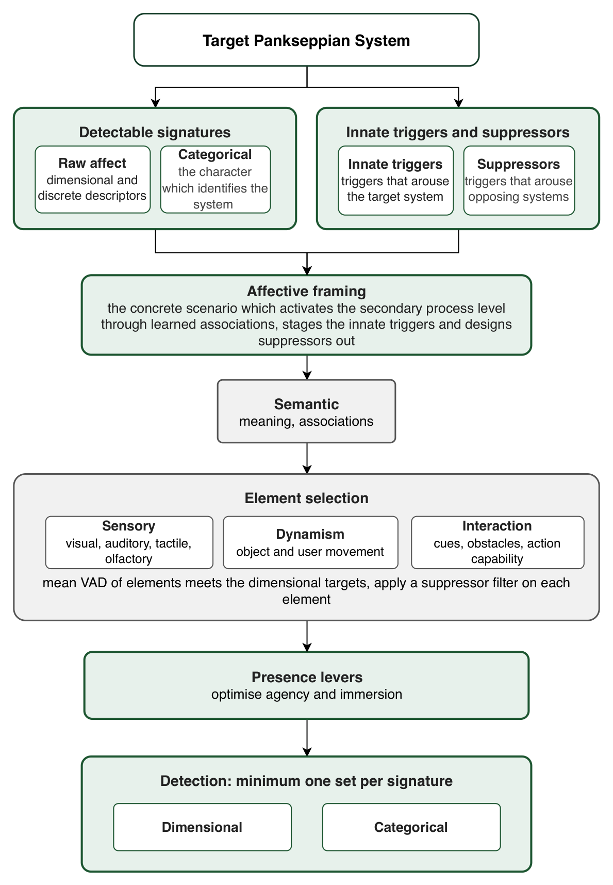
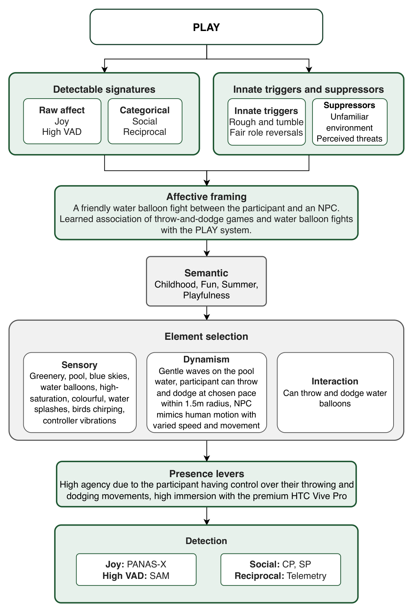
Applied to PLAY
- Detectable signatures. Raw affect: joy with high valence, arousal and dominance. Categorical signature: the interaction is social and reciprocal.
- Innate triggers: rough-and-tumble interaction and fair role reversals, where each side alternates between attacking and defending and neither loses for too long.
- Suppressors to design out: anything that would arouse FEAR, RAGE or PANIC/GRIEF, chiefly perceived threats and an unfamiliar environment, since PLAY only runs when the negative systems are quiet.
- Affective framing: a friendly water balloon fight. Throw-and-dodge games and water balloon fights are learned associations with play, the stakes are plainly non-serious, the NPC is a non-threatening child, and a generic suburban backyard is familiar enough that nothing hidden could feel dangerous.
- Element selection: greenery, pool, blue sky, high-saturation colours, water splashes, birdsong and controller vibration; gentle waves on the water and an NPC that moves with varied human-like speed; the ability to throw and dodge. Elements were chosen by their published valence, arousal and dominance ratings so that the environment's overall tone matched the target.
- Presence levers: high agency, because the participant controls what, where and how they throw and can move their body to dodge; high immersion from the HTC Vive Pro.
What happens in this world
The fairness trigger is the hardest to deliver, because a fixed-difficulty opponent is fair for only one kind of player. The NPC therefore measures the participant's throwing skill from the same levers it plays with (throw accuracy, throw frequency and reaction time) and then sets its own skill above, below or equal to the participant's. The experience is sequenced so that every participant gets guaranteed periods of winning, losing and even play, which is the role reversal Panksepp observed in animal play. As the session goes on the NPC also introduces advanced moves: high-velocity throws, two-handed throws, high lobbed throws and side throws from behind its cover.
Built in Unity 6 (6000.3.17f1) with the XR Interaction Toolkit and OpenXR, targeting the HTC Vive Pro. The NPC is a finite state machine (hide, stalk, throw, duck) with a separate difficulty layer, a threat detector that watches incoming balloons, and a line-of-sight check that decides when the player is exposed.
Gallery
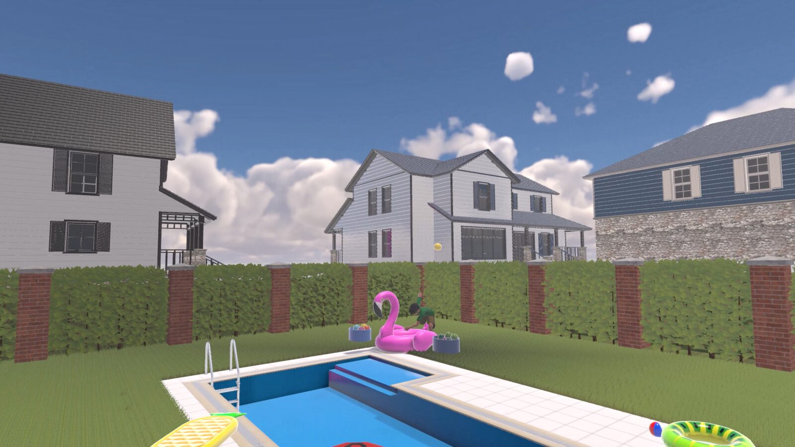
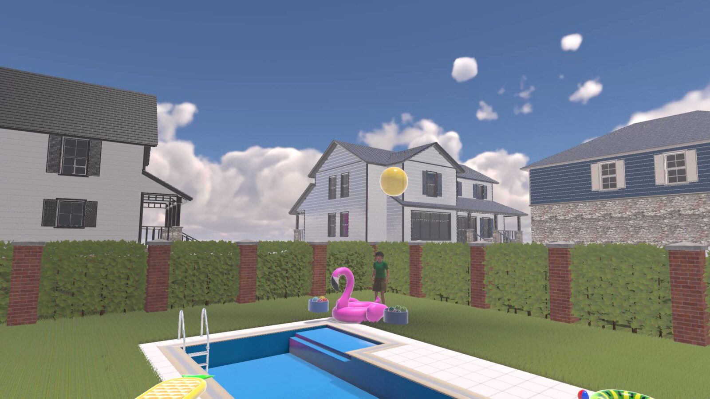
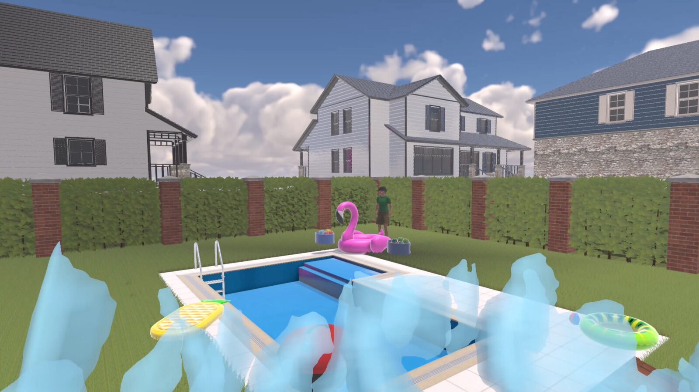
How it was tested
The study followed the shared procedure: a within-subjects design with 25 participants, each completing the tutorial environment and then the Water Balloon environment, with SAM, PANAS-X and ANSS at all three readings, the iPQ after each environment, and the co-presence and social presence scales after the Water Balloon environment. Throw telemetry was recorded for 23 of the 25 participants.
Reciprocity was tested from the telemetry by asking whether participants answered the NPC's throws. A throw counts as answered if the participant threw at least once before the NPC's next throw. Because some answers would happen by chance under any throwing rhythm, each participant's throw record was time-shifted 1000 times to produce surrogate records that keep their rhythm but break alignment with the NPC. The observed answered proportion minus the surrogate average is the reciprocity index; if participants threw on their own rhythm it is zero.
What this experiment showed
3 of 7 parts met
- Valence (partly met)
- Arousal (not met)
- Dominance (not met)
- Reciprocity (not met)
- Sociality (met)
- Joy (met)
- PLAY (met)
Filled: met. Half: partly met. Empty: not met.
Participants were happy and felt present. Valence at P3 was well above the high threshold (median 8 on a 9-point scale), Joviality rose more than any other PANAS-X subscale and finished as the highest subscale, the PLAY subscale of the ANSS rose more than any other Pankseppian subscale, and the NPC was perceived as a social being on both the co-presence and social presence scales. Presence was high: the mean iPQ score of 1.41 sits in the high-to-exceptional range for head-mounted display studies, and was significantly higher than after the tutorial.
Three things fell short. Arousal and dominance were descriptively above the high threshold but not significantly so, and no SAM reading rose significantly from P2 to P3. The PLAY subscale was not significantly higher than SEEKING at P3, which the paper attributes partly to SEEKING's sensitivity to VR novelty and partly to SEEKING being a general appetitive system that energises the others. And the reciprocity index, though positive, was not significantly different from zero.
| Hypothesis | Test | Result | Outcome |
|---|---|---|---|
| H-SAM-1v: valence at P3 above 6.33 | Wilcoxon | V = 325, p < .001, r = 1.00 | Supported |
| H-SAM-1a: arousal at P3 above 6.33 | Wilcoxon | V = 206, p = .245, r = .27 | Not supported |
| H-SAM-1d: dominance at P3 above 6.33 | Wilcoxon | V = 230, p = .141, r = .42 | Not supported |
| H-SAM-2v: valence rose, P2 to P3 | Wilcoxon | V = 35, p = .134, r = .56 | Not supported |
| H-SAM-2a: arousal rose, P2 to P3 | Wilcoxon | V = 92, p = .217, r = .35 | Not supported |
| H-SAM-2d: dominance rose, P2 to P3 | Wilcoxon | V = 63, p = .517, r = .20 | Not supported |
| H-PANASX-1: Joviality rose most, P2 to P3 | Wilcoxon | V = 236, p = .050, r = .45 | Supported |
| H-PANASX-2: Joviality highest at P3 | Paired t | t(24) = 2.15, p = .042, d = 0.43 | Supported |
| H-ANSS-1: PLAY rose most, P2 to P3 | Paired t | t(24) = 3.26, p = .003, d = 0.65 | Supported |
| H-ANSS-2: PLAY highest at P3 | Wilcoxon | V = 84.5, p = .718, r = .10 (runner-up SEEKING) | Not supported |
| H-CP-1: co-presence above midpoint | Wilcoxon | V = 306.5, p < .001, r = .89 | Supported |
| H-SP-1: social presence above midpoint | One-sample t | t(24) = 2.49, p = .020, d = 0.50 | Supported |
| H-TEL-1: throws answered the NPC | One-sample t | t(22) = 1.32, p = .202, d = 0.27 | Not supported |
| H-iPQ-1: presence above midpoint | One-sample t | t(24) = 10.20, p < .001, d = 2.04 | Supported |
| H-iPQ-2: presence rose, P2 to P3 | Paired t | t(24) = 2.46, p = .021, d = 0.49 | Supported |
p-values within the SAM, PANAS-X and ANSS groups are Holm-Bonferroni adjusted. Effect sizes are the matched rank-biserial correlation (r) for Wilcoxon tests and Cohen's d (dz for paired designs) for t-tests.
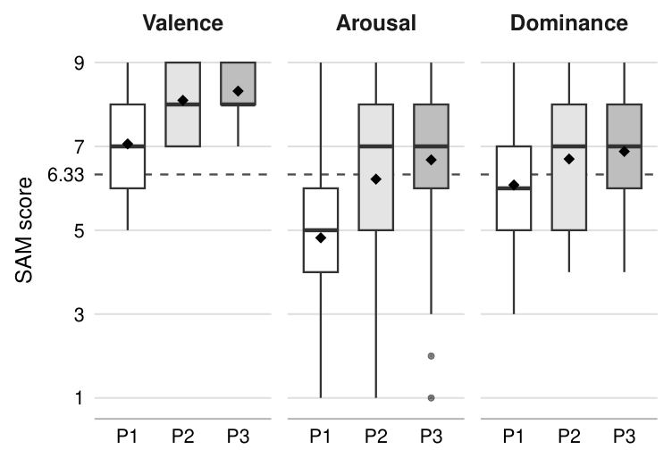
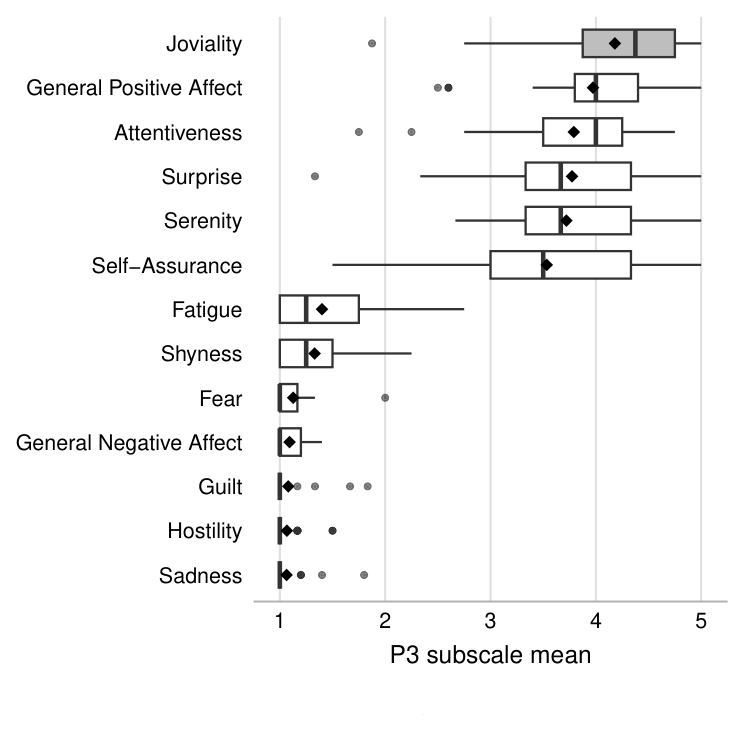
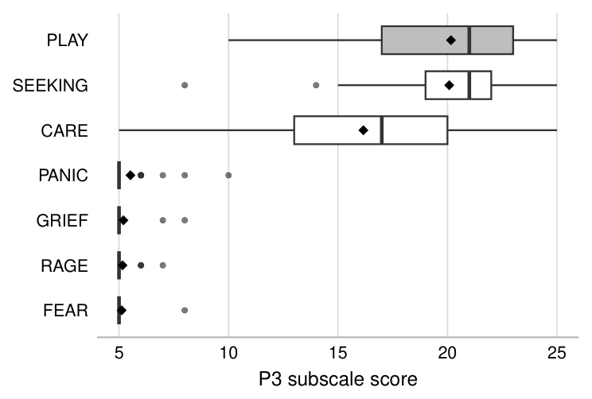
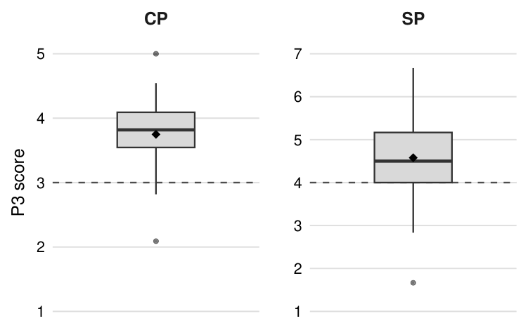
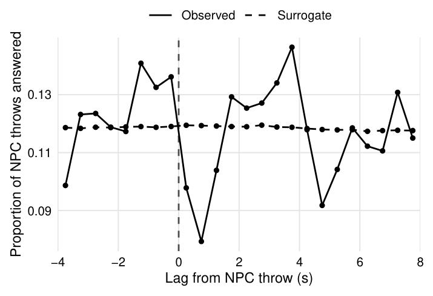
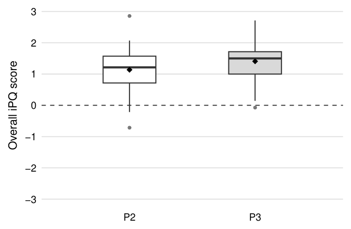
What it means
Valence did not rise from P2 to P3 because it had nowhere to go: the novelty of VR had already pushed it to a mean of 8.10 at P2. Arousal and dominance most likely suffered from the throwing mechanism, which gave participants an average hit rate of 12.6%. Missing the NPC over and over is repetitive, and repetition lowers arousal; repeated failure also reduces the sense of control that dominance measures. The reciprocity graph still shows the pattern you would expect from a real exchange, a pause after each NPC throw and a reply shortly after, even though the summary test did not reach significance.
Two changes are recommended before the environment is tested again: stronger throw assists so that participants hit the NPC often enough to stay aroused and in control, and a sample of experienced VR users so that the novelty effect stops masking what the environment does on its own.
Keep exploring the project
| Document | Format |
|---|---|
| Final paper: Playing with Virtual Reality: Eliciting PLAY through a Water Balloon Virtual Environment | |
| Literature review file to be added | |
| Virtual environment design specification file to be added |
Source code
Link to the compressed source archive for this environment, with a one-line note on what it contains and how to open it.